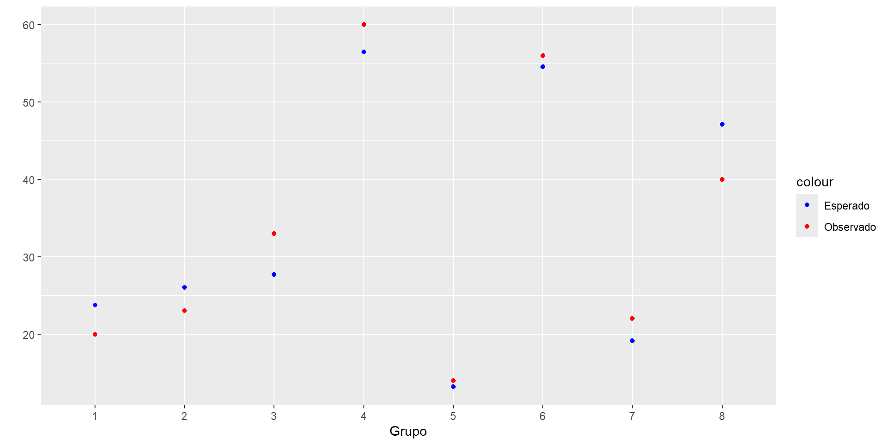
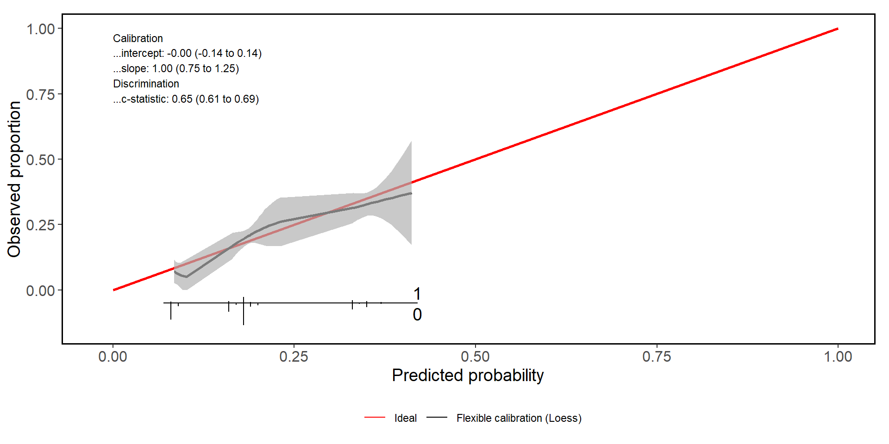
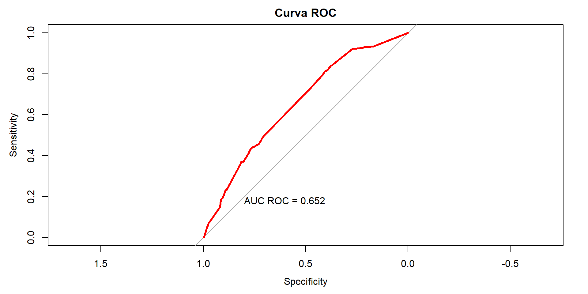

| sex | newchd | Total | |
|---|---|---|---|
| 0 | 1 | ||
| 0 | 616 85.6 % |
104 14.4 % |
720 100 % |
| 1 | 479 74.5 % |
164 25.5 % |
643 100 % |
| Total | 1095 80.3 % |
268 19.7 % |
1363 100 % |
| χ2=25.612 · df=1 · φ=0.139 · p=0.000 | |||
Adecuacion del Modelo
Diego Halac
Objetivos
Evaluar la performance global de un modelo de regresion logística
Estimar la calibración y capacidad de discriminación del modelo
Estimar características operativas de un modelo en base a un valor de probabilidad definido
Adecuacion de Ajuste
En Regresión Logística, adecuación del ajuste implica la comparación entre los datos observados y los predichos por el modelo, y es una herramienta diagnóstica que nos informa si este se aproxima a los datos en cada una de las combinaciones posibles de covariables
Patron de Covariables: combinaciones posibles de variables independientes que presenta cada individuo en base al modelo.
- Ej: un modelo que evalúa EC en función de las variables género, HTA y fumador todas dicotómicas , va a tener 8 posibles combinaciones (2 x 2 x 2)
Se pueden usar los patrones de Covariables?
Si no tuviéramos información sobre el sexo del individuo, nuestra mejor aproximación al riesgo de EC sería 19.7%.
La variable sex agrega 2 posibles niveles de riesgo (mujer y hombre) y vemos que el modelo predice sus riesgos en 14,4% y 25,5%.
Covariables (cont.)
- Cuando agregamos hta y cig los patrones pasan a ser 45, y la cantidad de individuos por grupo tienden a 1…
| id | n | male | hta |
|---|---|---|---|
| 1 | 346 | 1 | 0 |
| 2 | 403 | 0 | 1 |
| 3 | 317 | 0 | 0 |
| 4 | 297 | 1 | 1 |
| id | n | male | hta | cig |
|---|---|---|---|---|
| 1 | 136 | 1 | 0 | 0 |
| 2 | 293 | 0 | 1 | 0 |
| 3 | 16 | 0 | 0 | 10 |
| 4 | 19 | 1 | 0 | 30 |
| 5 | 97 | 1 | 0 | 20 |
| 6 | 24 | 1 | 0 | 5 |
| 7 | 36 | 0 | 0 | 5 |
| 8 | 15 | 1 | 0 | 40 |
| 9 | 207 | 0 | 0 | 0 |
| 10 | 10 | 0 | 0 | 15 |
| 11 | 19 | 1 | 0 | 15 |
| 12 | 29 | 0 | 0 | 20 |
| 13 | 6 | 1 | 0 | 50 |
| 14 | 10 | 0 | 0 | 1 |
| 15 | 5 | 1 | 0 | 35 |
| 16 | 13 | 1 | 0 | 10 |
| 17 | 6 | 0 | 0 | 30 |
| 18 | 1 | 0 | 0 | 35 |
| 19 | 3 | 1 | 0 | 1 |
| 20 | 2 | 0 | 0 | 25 |
| 21 | 8 | 1 | 0 | 25 |
| 22 | 1 | 1 | 0 | 60 |
| 23 | 14 | 0 | 1 | 15 |
| 24 | 112 | 1 | 1 | 0 |
| 25 | 25 | 1 | 1 | 5 |
| 26 | 12 | 1 | 1 | 40 |
| 27 | 4 | 1 | 1 | 35 |
| 28 | 1 | 1 | 1 | 60 |
| 29 | 24 | 1 | 1 | 30 |
| 30 | 38 | 0 | 1 | 5 |
| 31 | 73 | 1 | 1 | 20 |
| 32 | 15 | 1 | 1 | 15 |
| 33 | 12 | 1 | 1 | 10 |
| 34 | 4 | 1 | 1 | 1 |
| 35 | 2 | 0 | 1 | 30 |
| 36 | 25 | 0 | 1 | 20 |
| 37 | 12 | 0 | 1 | 1 |
| 38 | 5 | 1 | 1 | 50 |
| 39 | 1 | 0 | 1 | 45 |
| 40 | 12 | 0 | 1 | 10 |
| 41 | 9 | 1 | 1 | 25 |
| 42 | 2 | 0 | 1 | 25 |
| 43 | 2 | 0 | 1 | 35 |
| 44 | 1 | 0 | 1 | 40 |
| 45 | 1 | 1 | 1 | 45 |
Test de Hosmer & Lemershow
En lugar de estimar la diferencia entre observado y predicho para cada patrón de covariables , este test crea categorías basadas en la estimación de probabilidades (riesgo predicho) que el modelo asigna a cada individuo en base a la combinación de las distintas variables, independientemente del patrón específico.
Hosmer & Lemershow
Grupos de similar n (en gral 10 grupos = quantilos de riesgo)
Divide a la distribución de probabilidades asignadas por el modelo en quantilos (desde el quantilo de menor a mayor probabilidad)
Estima la diferencia entre eventos observados y predichos en cada subgrupo de probabilidad estimada por el modelo
Esta opción muy usada hace tiempo:
- por un lado evita grupos en los que el n sea muy pequeño.
- la distribución del valor del test sigue más rigurosamente una distribución de \(X^2\).
Agrupacion forzada de observaciones en grupos de riesgo, p-valor poco informativo (direccion del error)
Ejemplo
| quantilos | CANT | observados | esperados |
|---|---|---|---|
| [0.0843,0.0913] | 279 | 20 | 23.75316 |
| (0.0913,0.165] | 174 | 23 | 25.99606 |
| (0.165,0.181] | 156 | 33 | 27.73025 |
| (0.181,0.188] | 301 | 60 | 56.48263 |
| (0.188,0.192] | 69 | 14 | 13.17471 |
| (0.192,0.331] | 198 | 56 | 54.57238 |
| (0.331,0.35] | 56 | 22 | 19.14739 |
| (0.35,0.412] | 129 | 40 | 47.14342 |
Ejemplo - Grafico

Nos permite observar rápidamente el grado de acuerdo en los diferentes grupos y eventualmente los grupos en los que el modelo no logra predecir adecuadamente el evento en estudio.
Hosmer & Lemershow
El test de HL (\(X^2\)) estima la sumatoria de las diferencias entre observados y predichos en cada quantil de riesgo.
- ¿Cuál es la hipótesis nula?
- “No hay diferencia entre lo observado y lo predicho”
- ¿Que esperamos de un modelo que calibra adecuadamente?
- \(p > 0.05\)
Calibration Slope + Intercept

Otras medidas de Adecuación - Clasificación y Discriminación
Una tabla de clasificación se puede obtener definiendo un umbral de probabilidad estimada del evento como punto de corte. Uno puede elegir esa probabilidad en función del evento que esta analizando.
En este caso, uno podría definir que si la probabilidad global de EC en este grupo es del 20%, yo quiero que el modelo defina como “alta probabilidad” aquellos individuos en los que la probabilidad estimada por el modelo sea = o > de 10 o 20%.
Otras medidas de Adecuacion - Clasificacion y Discriminacion
- De esta manera uno construye una tabla de 2x2 entre predichos y observados , y esto permite estimar características operativas y capacidad de clasificación del modelo.
- A partir de un punto de corte definido puedo evaluar la sensibilidad, especificidad, valores predictivos y porcentaje de clasificación correcta de las observaciones de cada modelo
Ejemplo
| prediccion | verdad | Total | |
|---|---|---|---|
| 0 | 1 | ||
| 0 | 295 | 21 | 316 |
| 1 | 799 | 247 | 1046 |
| Total | 1094 | 268 | 1362 |
| χ2=43.142 · df=1 · φ=0.180 · p=0.000 | |||
Sensibilidad: 0.93Especificidad: 0.24| prediccion | verdad | Total | |
|---|---|---|---|
| 0 | 1 | ||
| 0 | 853 | 158 | 1011 |
| 1 | 241 | 110 | 351 |
| Total | 1094 | 268 | 1362 |
| χ2=39.702 · df=1 · φ=0.173 · p=0.000 | |||
Sensibilidad: 0.84Especificidad: 0.31Problemas
Estas tablas son útiles cuando nos interesa clasificar a los individuos en función de una determinada probabilidad o un punto de corte definido, pero no representan un buen método de adecuación global del modelo.
En estos casos, el uso de un umbral arbitrario colocará a individuos con probabilidades muy similares en grupos distintos, lo cual no esta en consonancia con la interpretación clínica.
De todos modos este criterio es muy utilizado en la práctica clínica ya que facilita la toma de decisiones.
Mas problemas…
Además, el uso de un solo punto de corte implica una pérdida importante de información provista por la regresión logística.
Como puede observarse, uno puede estimar la sensibilidad y especificidad para múltiples puntos de corte de probabilidad estimada por el modelo.
Esto permite construir un gráfico que relacione estas 2 características simultáneamente y así evaluar la capacidad de discriminación global del modelo…..
Curva ROC

Matriz de Sensibilidad
| SENS | ESPEC | CUTOFF |
|---|---|---|
| 1.0000000 | 0.0000000 | -Inf |
| 0.9328358 | 0.1727605 | 0.0845407 |
| 0.9328358 | 0.1819013 | 0.0856725 |
| 0.9291045 | 0.2138940 | 0.0877393 |
| 0.9253731 | 0.2276051 | 0.0900857 |
| 0.9253731 | 0.2367459 | 0.0924884 |
| 0.9216418 | 0.2623400 | 0.0949486 |
| 0.9216418 | 0.2641682 | 0.0974671 |
| 0.9216418 | 0.2696527 | 0.1000451 |
| 0.9216418 | 0.2705667 | 0.1329997 |
| 0.8395522 | 0.3747715 | 0.1650496 |
| 0.8395522 | 0.3775137 | 0.1670611 |
| 0.8171642 | 0.3939671 | 0.1707238 |
| 0.8134328 | 0.4049360 | 0.1748640 |
| 0.7947761 | 0.4177331 | 0.1790828 |
| 0.7164179 | 0.4872029 | 0.1833808 |
| 0.7126866 | 0.4936015 | 0.1866285 |
| 0.4925373 | 0.7074954 | 0.1881497 |
| 0.4813433 | 0.7157221 | 0.1892797 |
| 0.4589552 | 0.7276051 | 0.1910655 |
| 0.4402985 | 0.7577697 | 0.1933143 |
| 0.4402985 | 0.7623400 | 0.1955827 |
| 0.4291045 | 0.7705667 | 0.1978716 |
| 0.4104478 | 0.7797075 | 0.2001803 |
| 0.3955224 | 0.7888483 | 0.2036671 |
| 0.3694030 | 0.8053016 | 0.2072279 |
| 0.3694030 | 0.8107861 | 0.2096172 |
| 0.3694030 | 0.8126143 | 0.2132243 |
| 0.3694030 | 0.8144424 | 0.2169069 |
| 0.3694030 | 0.8153565 | 0.2193769 |
| 0.3656716 | 0.8162706 | 0.2231043 |
| 0.3619403 | 0.8162706 | 0.2281651 |
| 0.3619403 | 0.8171846 | 0.2808308 |
| 0.2313433 | 0.8875686 | 0.3315880 |
| 0.2313433 | 0.8912249 | 0.3348104 |
| 0.1940299 | 0.9049360 | 0.3406439 |
| 0.1865672 | 0.9140768 | 0.3471795 |
| 0.1492537 | 0.9186472 | 0.3537731 |
| 0.0783582 | 0.9680073 | 0.3604229 |
| 0.0708955 | 0.9744059 | 0.3671266 |
| 0.0335821 | 0.9872029 | 0.3738821 |
| 0.0261194 | 0.9890311 | 0.3806871 |
| 0.0074627 | 0.9954296 | 0.3875394 |
| 0.0037313 | 0.9954296 | 0.3944364 |
| 0.0000000 | 0.9990859 | 0.4048749 |
| 0.0000000 | 1.0000000 | Inf |
Curva ROC - Clasificacion
La curva ROC es una representación gráfica de cómo un modelo de clasificación binaria se desempeña en diferentes puntos de corte.
El AUC ROC varía entre 0 y 1, donde un valor de 0.5 indica que el modelo es tan bueno como el azar, y un valor de 1 indica que el modelo es perfecto y puede distinguir perfectamente entre las dos clases.
- El AUC ROC se puede interpretar como la probabilidad de que el modelo clasifique una observación de la clase positiva correctamente. mide la capacidad del modelo para asignar mayor probabilidad a las observaciones con el evento en comparación con las observaciones sin el evento.
RESUMEN
- Una vez que construimos el modelo…..
- Evaluamos la bondad de ajuste
- Predichos ~ Observados
- Patron de Covariables
- Hosmer & Lemershow
- Slope / Intercept
- Predichos ~ Observados
- Evaluamos Capacidad de Discriminación del Modelo
- Según la pregunta de investigación, seleccionamos un punto de corte.
- Obtenemos métricas de performance del modelo con el punto de corte seleccionado.